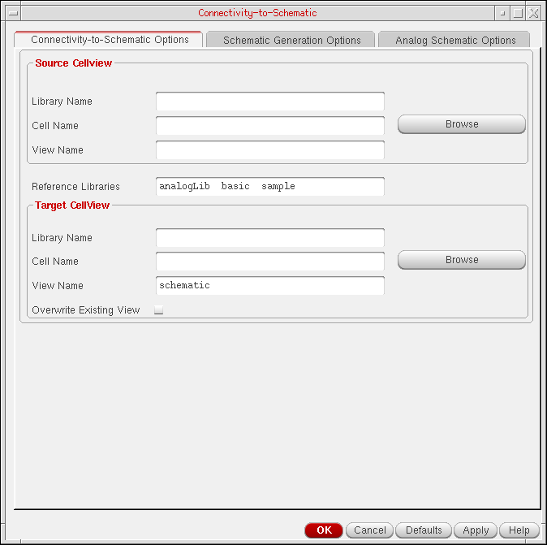

1
Introducing Connectivity-to-Schematic
The Connectivity-to-Schematic tool is used to generate digital and analog schematic views from netlist views. This topic describes how to use the Connectivity-to-Schematic tool. It is aimed at the designers of digital and analog circuits and assumes that you are familiar with:
- The Virtuoso Studio design environment and application infrastructure mechanisms designed to support consistent operations between all Cadence tools.
- The applications used to design and develop integrated circuits in the Virtuoso Studio design environment, notably Virtuoso Schematic Editor.
- Virtuoso technology data.
This topic is aimed at designers of integrated circuits and assumes that you are familiar with:
- The Virtuoso Studio design environment and application infrastructure mechanisms designed to support consistent operations between all Cadence tools.
- The applications used to design and develop integrated circuits in the Virtuoso Studio design environment, notably Virtuoso Layout Suite and Virtuoso Schematic Editor.
- Component Description Format (CDF), which lets you create and describe your own components for use with ADE.
The Connectivity-to-Schematic tool (conn2sch) is used to generate schematic views from netlist views. A netlist view contains only connectivity information for a design. The Connectivity-to-Schematic tool generates a fully placed and routed schematic view using the connectivity information. You can create both, digital and analog schematic views using this tool. The Connectivity-to-Schematic tool provides different placement and routing engines to generate digital and analog schematic views. A schematic view can be opened, viewed, and edited using Virtuoso® Schematic Editor.
This topic describes how the Connectivity-to-Schematic tool works. The topic also describes different methods of running the tool.
Licensing Requirements
Digital Schematic View
In this view, the Connectivity-to-Schematic tool searches for the following licenses in the specified order and checks out one of them:
- 95100 Virtuoso® Schematic Editor L
- 95300 Virtuoso® Layout Suite L
- 95115 Virtuoso® Schematic Editor XL
- 95310 Virtuoso® Layout Suite XL
- 4 tokens of 95320 Virtuoso® Layout Suite - GXL
Analog Schematic View
In this view, the Connectivity-to-Schematic tool searches for the following licenses in the specified order and checks out one of them:
- 95115 Virtuoso® Schematic Editor XL
- 95310 Virtuoso® Layout Suite XL
- 4 tokens of 95320 Virtuoso® Layout Suite - GXL
For information on licensing in the Virtuoso Studio design environment, see Virtuoso Software Licensing and Configuration Guide.
Connectivity-to-Schematic — How it Works
The Connectivity-to-Schematic tool:
-
Accepts an OpenAccess (OA) netlist view as input and generates an OA schematic view by placing each component and wiring the connections with pins and nets.
- Retains all cellview properties of source cellview in the destination schematic view.
- Retains all effective CDF properties and other instance properties.
The following figure shows the files that the Connectivity-to-Schematic tool uses and creates while generating a schematic view:
Running the Connectivity-to-Schematic Tool
You can run the Connectivity-to-Schematic tool using:
Graphical User Interface
The graphical user interface (GUI) of the Connectivity-to-Schematic tool can be accessed from Virtuoso® Design Environment workbench. To access the Connectivity-to-Schematic GUI:
-
Click File and point to Import. A list of import tools is displayed as shown in the following figure.

-
Click Netlist View to launch the Connectivity-to-Schematic tool. The following figure shows the GUI of the Connectivity-to-Schematic tool:

Alternatively, you can use the Alt+f i n menu access keys (press Alt and f keys simultaneously and then press the i key followed by the n key) to run the Connectivity-to-Schematic tool from CIW.
For information about using the Connectivity-to-Schematic GUI, see Chapter 2, “Working with Connectivity-to-Schematic”.
SKILL Functions
The Connectivity-to-Schematic tool supports SKILL functions that enable you to create schematic views and launch GUI of the tool. These functions are run in Virtuoso® Design Environment workbench.
To know more about these SKILL functions, see HDL Import and Netlist-to-Schematic Conversion SKILL Reference.
Standalone Mode
You use the user interface of Connectivity-to-Schematic to specify the options and parameter settings. However, while working in the standalone mode, you can create files that contain all the options and parameter settings used by the tool to generate schematics. To know how to work in the standalone mode, see Chapter 3, “Working In Standalone Mode”.
Return to top